Uninstall#
Introduction#
This page contains uninstall options. The components that you can uninstall are: PySSA, Local Colabfold, WSL2 and the PySSA-Installer, which contains the other three components. The uninstallation can be done through multiple ways.
The two main ways are the Complete Uninstall and the PySSA and Local Colabfold Uninstall. If you want to uninstall PySSA, Local Colabfold and WSL2, the easiest way is to use the Complete Uninstall. This uninstall option will remove all three components in one way and deletes the pyssa directory under C:ProgramData.
If you wish to uninstall only the PySSA and Local Colabfold, and don’t want to remove the WSL2 from your system, choose the PySSA and Local Colabfold Uninstall. This uninstall option will remove the plugin and the WSL2 distro. This removes also the pyssa directory under C:ProgramData.
Furthermore there are the Other uninstall options. These contain two uninstall ways. The first is to uninstall each component at a time. Be aware that this removes each component directory within the pyssa directory. Therefore to have the pyssa directory removed, you need to uninstall the WSL2. The second is to uninstall the Local Colabfold and WSL2 if the PySSA plugin is already removed.
The last uninstall option is the Uninstall PySSA-Installer. This option describes the process to uninstall the PySSA-Installer.
Note
You need to remove the .pyssa directory by yourself. The directory is under C:Users%USERNAME%
Complete Uninstall#
Step 1 - Start PySSA-Installer#
Firstly, start the PySSA-Installer by clicking on the desktop icon.
{kind=link}
Step 2 - Configure uninstall#
After that, click More to select every component.
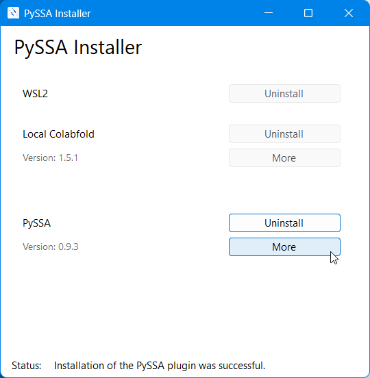{kind=link}
Step 3 - Selection of components#
Now you must select every component, to uninstall everything.
Note
When you select all components and click Uninstall, it will uninstall all components in one go. Then you can relax and wait, until the uninstallation is finish.
{kind=link}
PySSA and Local Colabfold Uninstall#
Step 1 - Start PySSA-Installer#
Firstly, start the PySSA-Installer by clicking on the desktop icon.
Step 2 - Configure Uninstall#
After that, click More to select components.
Step 3 - Selection of PySSA and Local Colabfold#
Now you must select PySSA and Local Colabfold, to uninstall these components.
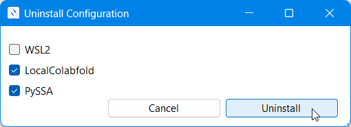{kind=link}
Other uninstall options#
Uninstall PySSA#
Step 1 - Start PySSA-Installer#
Firstly, start the PySSA-Installer by clicking on the desktop icon.
Step 2 - Uninstall#
After that, click on Uninstall next to PySSA to start the uninstallation.
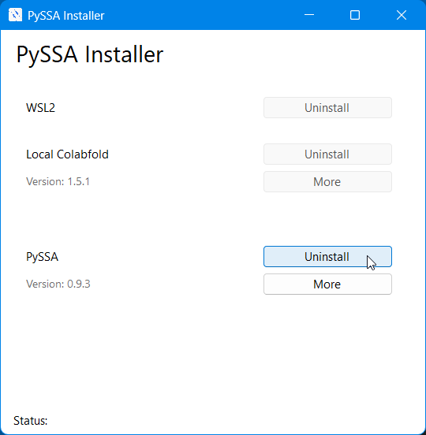{kind=link}
Uninstall Local Colafold#
Step 1 - Start PySSA-Installer#
Firstly, start the PySSA-Installer by clicking on the desktop icon.
Step 2 - Uninstall#
After that, click on Uninstall next to Local Colabfold to start the uninstallation.
Warning
You cannot uninstall Local Colabfold, if the PySSA plugin is still installed!
{kind=link}
Uninstall WSL2#
Step 1 - Start PySSA-Installer#
Firstly, start the PySSA-Installer by clicking on the desktop icon.
Step 2 - Uninstall#
After that, click on Uninstall next to WSL2 to start the uninstall process.
Warning
You cannot uninstall WSL2, if the PySSA plugin and Local Colabfold are still installed!
{kind=link}
Uninstall Local Colabfold and WSL2#
Step 1 - Start PySSA-Installer#
Firstly, start the PySSA-Installer by clicking on the desktop icon.
Step 2 - Configure Uninstall#
After that, click More to select the component WSL2 and Local Colabfold.
Warning
You cannot uninstall Local Colabfold and WSL2, if the PySSA plugin is still installed!
{kind=link}
Step 3 - Selection of Local Colabfold and WSL2#
Now you can select Local Colabfold and WSL2 and click on Uninstall, to uninstall these components.
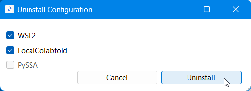{kind=link}
Uninstall PySSA-Installer#
Step 1 - Open settings#
Firstly, click on windows symbol on your keyboard left, next to the spacebar.
Note
You can also click on the windows symbol in the taskbar which is located on the bottom your screen.
Then you type settings in the searchbar and choose the Settings app by clicking Enter or a click with the mouse.
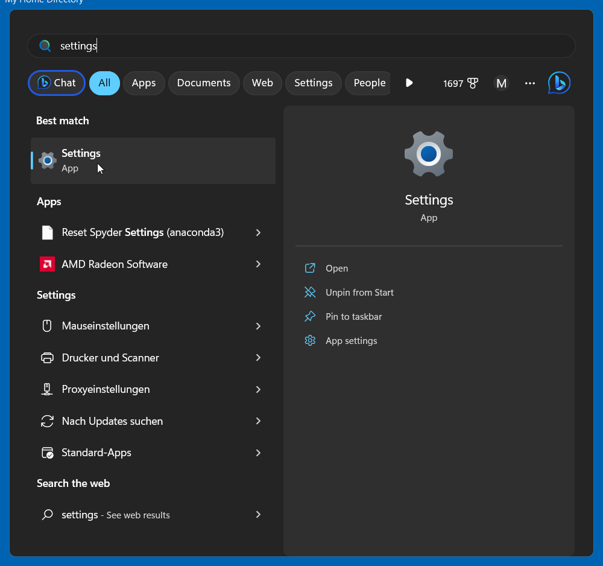{kind=link}
Step 2 - Select Apps#
After that, select Apps in the left sidebar.
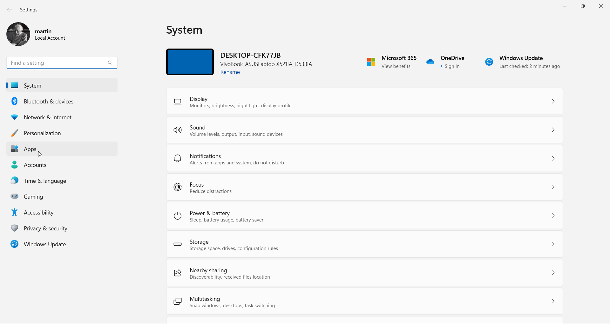{kind=link}
Step 3 - Installed apps#
Now you can click on Installed apps.
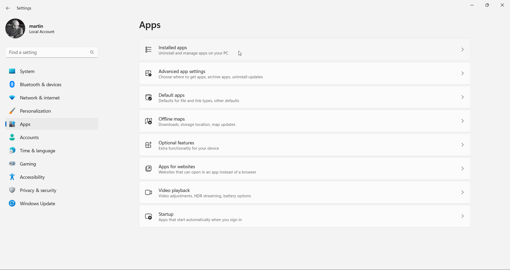{kind=link}
Step 4 - PySSA-Installer#
Then you click in the searchbar under Installed apps and type pyssa. After that, the PySSA-Installer should be displayed. Now you can click on the three dots which are on the right.
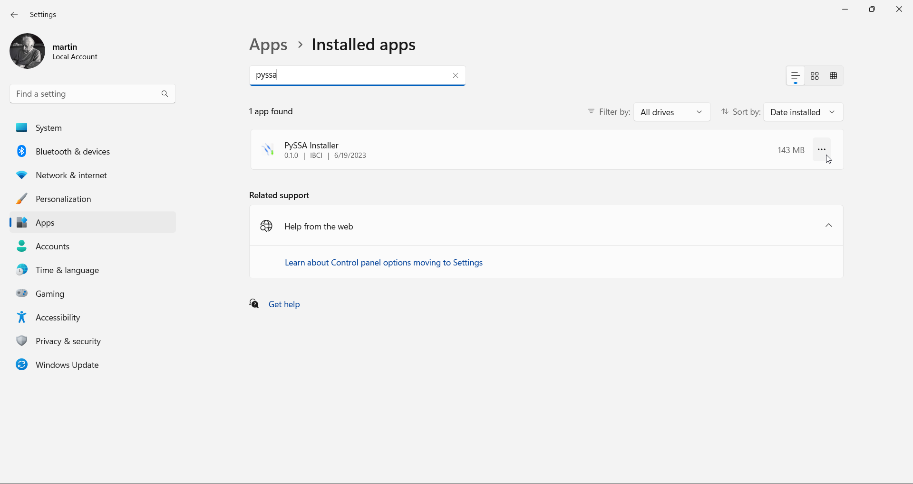{kind=link}
Step 5 - Uninstall#
After that, you can click on Uninstall.
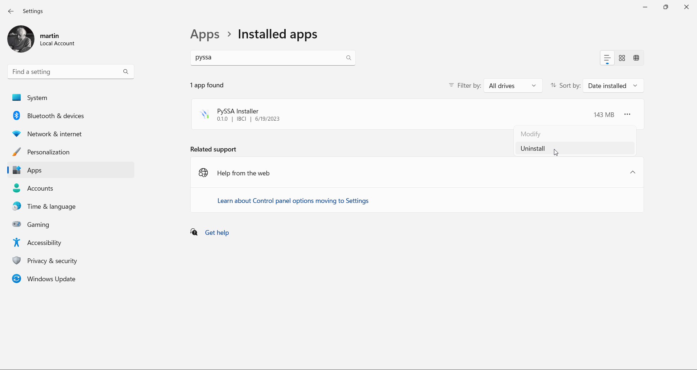{kind=link}
Then you can click on Uninstall again.
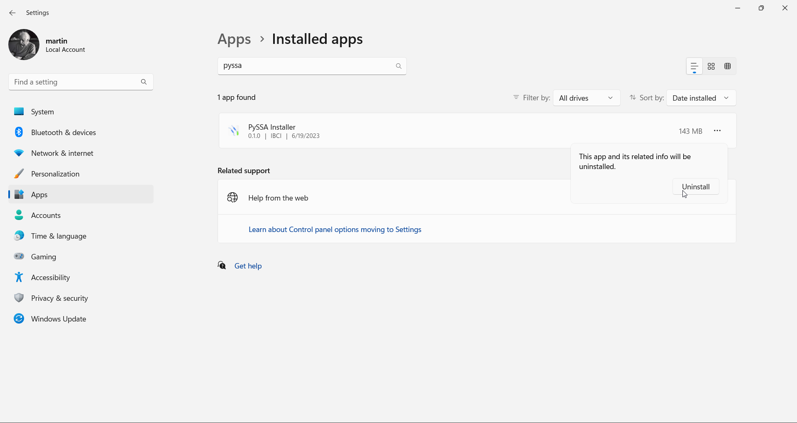{kind=link}
Step 6 - Accept Uninstall#
When you are sure, that you want to delete the PySSA-Installer, you can click on Yes again.
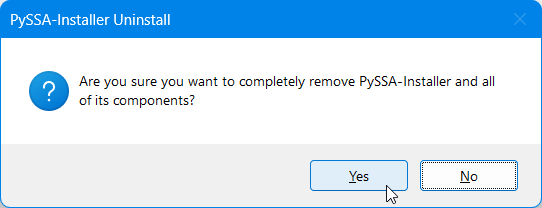{kind=link}
Step 7 - Finish Uninstall#
At last, you can click Ok to exit the setup.
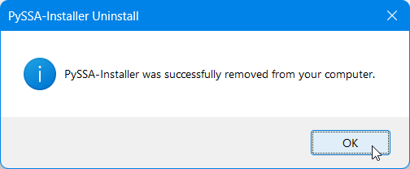{kind=link}